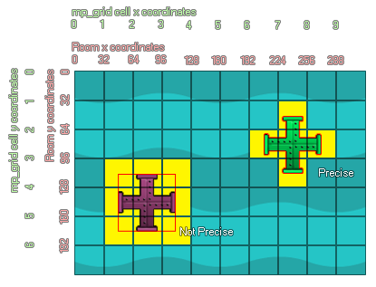

mp_grid_add_instances(id, obj, prec);
| Streit | Beschreibung |
|---|---|
| id | Index des zu verwendenden mp_grid |
| obj | Objektindex oder Instanz-ID der Instanzen, die zum mp_grid hinzugefügt werden sollen |
| prec | Ob die Prüfung auf pixelgenauen Kollisionen (true = langsam) oder generell auf dem Begrenzungsrahmen (false = fast) basiert. |
Rückgabe: N / A
Diese Funktion verwendet die Instanzkollisionsmaske (durch die Sprite-Eigenschaften oder den Maskenindex der aufrufenden Instanz festgelegt), um Zellen als verboten oder nicht zu kennzeichnen, wobei verbotene Zellen von keiner der Pfadsuchfunktionen gekreuzt werden können. Sie können in der Funktion angeben, ob genaue Kollisionen berücksichtigt werden sollen oder nicht. Die markierten verbotenen Zellen ändern sich abhängig von dieser Einstellung. Dieses Bild veranschaulicht dieses Verhalten:

Die beiden obigen Instanzen wurden mit der Funktion mp_grid_add_instances in das mp_grid eingefügt, wobei die Genauigkeit auf true gesetzt wurde. Wie Sie sehen, hat die grüne Instanz nur die von ihnen "berührten" Gitterquadrate als verboten markiert, da ihre Sprite-Maske ebenfalls auf "genau" gesetzt ist. Die zweite Instanz hat jedoch auch andere Zellen markiert, die sich scheinbar nicht berühren. Dies liegt daran, dass die Sprite-Maske nicht auf genau festgelegt ist. Dies bedeutet, dass auch bei Verwendung der genauen Einstellung in der Funktion nur der Begrenzungsrahmen des Sprites berücksichtigt wird. Dies würde auch passieren, wenn Sie das genaue Argument der Funktion auf "false" setzen. Selbst Instanzen mit einer genauen Sprite-Maske werden basierend auf ihren Begrenzungsrahmen in das Raster eingefügt.
mp_grid_add_instances(grid, obj_Wall,
true);
Der obige Code fügt alle Instanzen von "obj_Wall" zu dem in der Variablen "grid" indizierten mp_grid hinzu, wobei die genaue Kollisionsmaske anstelle des Begrenzungsrahmens verwendet wird.